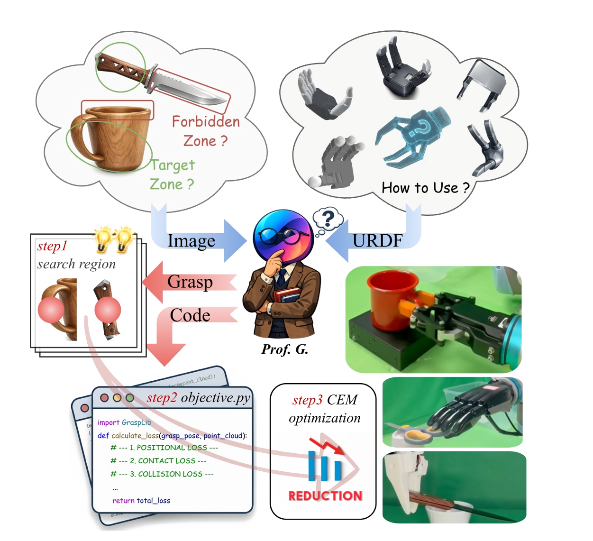
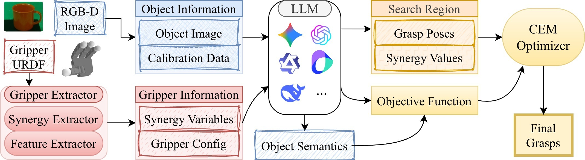
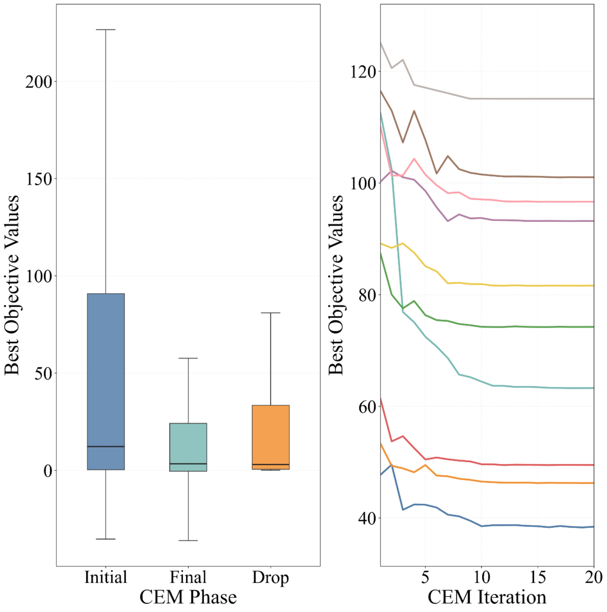
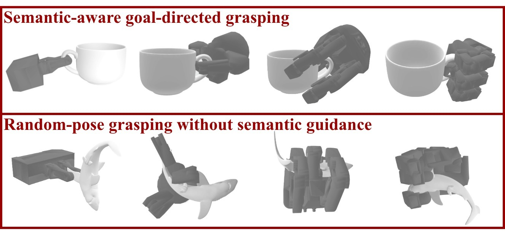
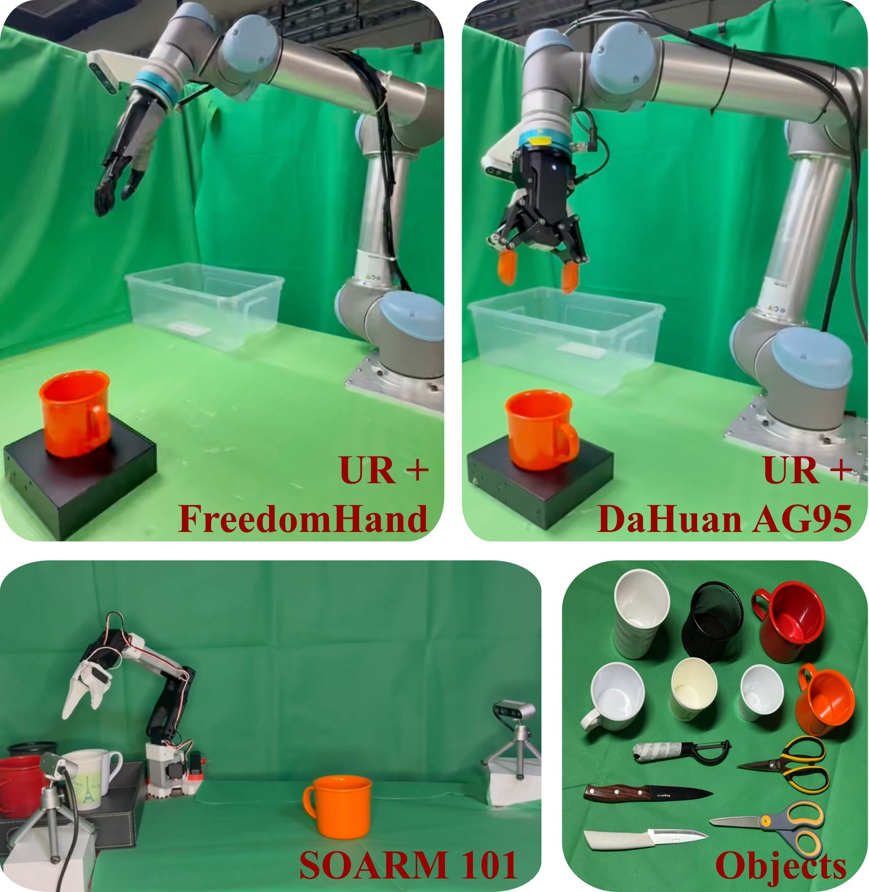
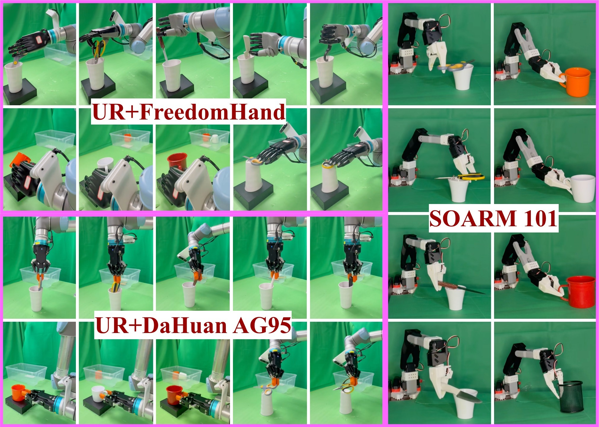

Training-free cross-gripper grasp synthesis
Ask Professor G. How to Grasp
Training-Free Cross-Gripper Grasping from an RGB-D Observation and a Gripper URDF

0
gripper-specific retraining
108
simulation objects in paper
7
evaluated end-effectors
88%+
real-world SR across setups
ABSTRACT
Robotic grasping systems must increasingly support heterogeneous end-effectors, from parallel-jaw grippers to dexterous multi-finger hands. Learned predictors often bind grasp perception to a fixed embodiment and require new data or retraining for a novel URDF. This project instead uses a foundation model at test time as a semantic compiler: it produces a search prior and an executable objective under a fixed API, while CEM performs instance-level optimization over pose and synergy variables.
METHOD
Prof. G. compiles a strategy-conditioned search region and executable objective from an RGB-D observation and a URDF-specified gripper. CEM then refines pose and synergy variables over the compiled objective to synthesize final grasps without gripper-specific retraining.

Video
End-to-end grasping demo
The demo video shows the project in motion, complementing the paper figures with a direct view of grasp synthesis and execution behavior.
Results
Simulation and real hardware evidence
In MuJoCo, the paper reports higher grasp success than representative geometry- and learning-based baselines on WSG-50 and Allegro. In real-world experiments, UR5e plus FreedomHand, UR5e plus DaHuan AG95, and SOARM101 setups all achieve success rates above 88%, with semantic success closely tracking physical success.




Contributions
What the paper adds
A training-free formulation for cross-gripper grasp synthesis that can deploy on novel URDF-specified end-effectors without gripper-specific retraining.
A semantics-driven conditioning mechanism that converts a single RGB-D observation and heterogeneous gripper morphology into strategy-conditioned search priors.
An API-constrained objective compilation and CEM refinement framework that turns semantic intent into reproducible executable energy functions across embodiments.
Getting started
Install, test, and run the cached demo
Install assets and package
git lfs install
git lfs pull
python -m venv .venv
.venv\Scripts\activate
pip install -e ".[test,llm,geometry]"Offline smoke check
pip install -e ".[test]"
python scripts/run_cached_demo.py
pytestRun the full pipeline
python scripts/run_pipeline.py --config configs/default.yaml
python scripts/run_pipeline.py --gripper wsg_50 --object 3D_Dollhouse_Lamp
python scripts/run_pipeline.py --cached --example examples/cachedResources